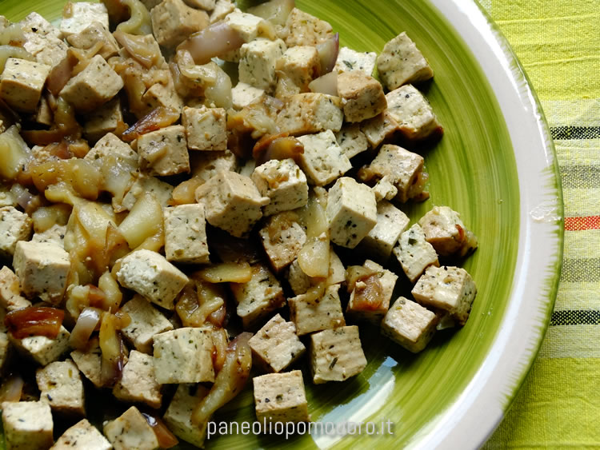

Tofu with aubergines

An easy recipe with cubet tofu and aubergines, flavoured with soy sauce. Ready in 15 minutes.
It's an easy recipe that allow you to eat healthy and vegan, without
sacrificing nutritional properties.
Ingredients
- Tofu
- Aubergines
- Oil
- Soy sauce
- Not much patience
Steps
- Cut the aubergines
- Put them into the pan
- Wait for 10 minutes, in the meantime cut the tofu
- Put the tofu in the pan along with the cooked aubergines
- Wait for 5 minutes and then it'll be ready to eat.